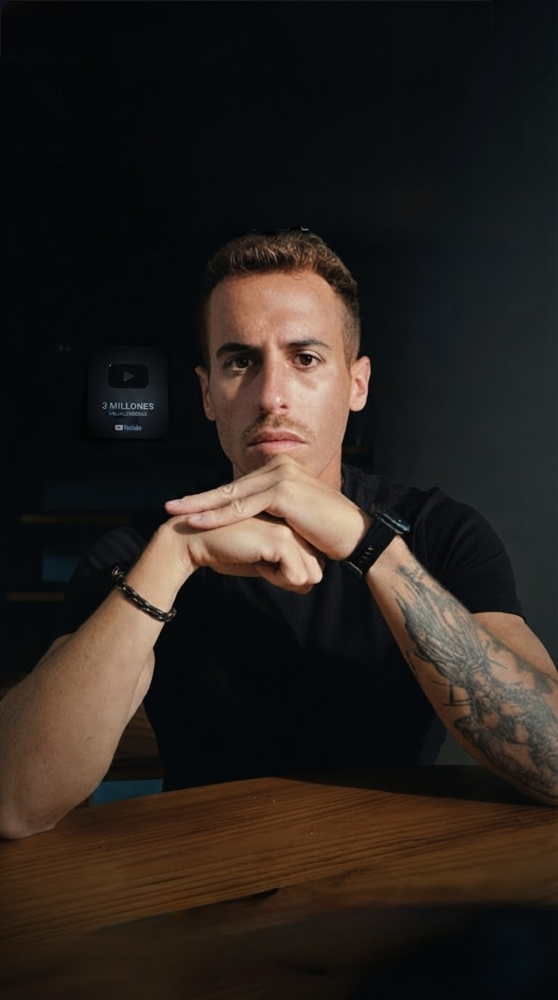

YOUTUBE / TRADING
Alpha X
Edición de contenido sobre trading: información con un ritmo visual que acompaña al discurso.
Ver en YouTubeSERGIO / EDITOR DE VÍDEO
Tú traes la idea. Yo le doy ritmo, claridad y una edición que invita a seguir mirando.
Vídeos para YouTube, Reels y marcas. Trabajas directamente conmigo, desde el primer corte hasta la entrega.
01 / PORTFOLIO SELECCIONADO
Distintas marcas, distintos ritmos. Explora los proyectos y encuentra el estilo que encaja con tu contenido.
FORMATO LARGO
Estructura, ritmo y claridad para YouTube.
YOUTUBE / TRADING
Edición de contenido sobre trading: información con un ritmo visual que acompaña al discurso.
Ver en YouTubeYOUTUBE / TUTORIAL
Tutorial sobre Hostinger. Una edición pensada para que cada paso se entienda y sea fácil de seguir.
Ver en YouTubeFORMATO VERTICAL
Reels, TikTok y Shorts con identidad propia.
La energía del entrenamiento, llevada a la pantalla.
Imagen y música, hablando el mismo idioma.
Cuéntame qué quieres transmitir y buscamos la forma de llevarlo a la pantalla.
Hablemos de tu vídeo02 / CADA CORTE TIENE UN PORQUÉ
El formato cambia. El cuidado en la narrativa, el sonido y el acabado se mantiene.
De material en bruto a un vídeo con estructura. Selección de tomas, ritmo narrativo, apoyos visuales y un acabado coherente con tu canal.
Adobe Premiere ProEdición vertical, subtítulos legibles, música y cortes que acompañan el mensaje. Contenido adaptado a Reels, TikTok y Shorts.
CapCutPiezas que mantienen una misma dirección visual. Definimos referencias, tono y formatos para que cada vídeo se sienta parte de tu marca.
Un criterio visual compartido03 / FÁCIL DESDE EL PRIMER MENSAJE
Me cuentas qué haces, para quién y qué quieres conseguir. Vemos tu material y tus referencias.
Acordamos formatos, alcance, presupuesto, plazos y revisiones antes de empezar.
Preparo una primera versión y recogemos tu feedback para afinar el resultado.
Recibes las piezas en los formatos acordados, preparadas para tus canales.
ANTES DE EMPEZAR
Una buena colaboración empieza sabiendo qué esperar.
El tipo de vídeo, la duración aproximada del material y de la pieza final, una referencia de estilo y la fecha que tienes en mente. Con eso podemos concretar el alcance.
Sí. Podemos plantear vídeos puntuales o un calendario de contenido, ajustando el volumen y las entregas a lo que necesitas.
Acordamos las rondas de revisión en la propuesta. Tendrás un punto de revisión para compartir tus comentarios sobre la edición.
Adobe Premiere Pro para proyectos complejos y CapCut para contenido social. Elijo el flujo de trabajo según las necesidades de cada pieza.
TU PRÓXIMO VÍDEO EMPIEZA AQUÍ
Envíame tu idea, una referencia y la fecha que tienes en mente. Te responderé con el siguiente paso para valorar tu proyecto.
Hablemos por WhatsApp Contacto directo conmigo. Sin compromiso.
SergioTu editor. De principio a fin.